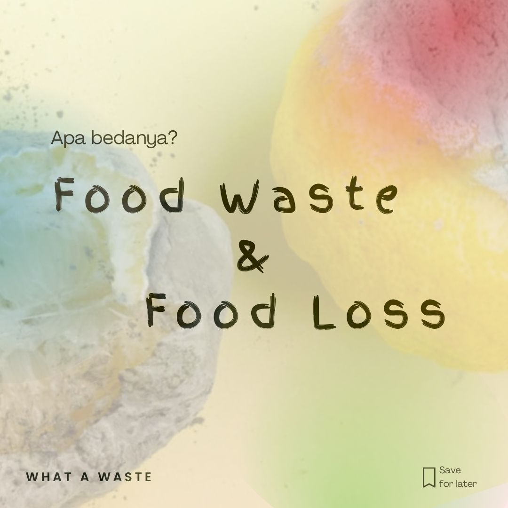

Food Waste
Ayok Mengenal Isu Foodwaste
Kenapa bisa muncul isu Foodwaste? Sebelumnya simak dulu penjelasan sederhana mengenai apa itu Food Waste atau Limbah Pangan yang ada di sekitar kita.
Food Waste dan Food Loss
Apa itu Food Loss?
Setelah mengentahui penjelasan sederhana terkait isu Food waste, ada baiknya teman-teman dapat mengenal istilah lain yang sering dikaitkan dengan Food Waste, yakni Food Loss. Yuk simak penjelasan berikut ini.

Mengenal lebih lanjut isu Food Waste:
Setelah mengetahui definisi dan istilah sederhana mengenai limbah pangan, teman-teman dapat lebih lanjut mencari tau beberapa topik berikut untuk memaksimalkan pengetahuan mengenai isu limbah pangan.
- Tips dan Trik Mengurangi Limbah Pangan di lingkungan sekitar
- Rekomendasi Film Dokumenter mengenai Food Waste
Anggota Kelompok
Kenalan, yuk!
Albert H S
David Immanuel

Farizqa A P
Friessa A P

Latifah R N A
Ayo daftarkan diri anda untuk ikut perangi Food Waste dan Food Lost bersama-sama !